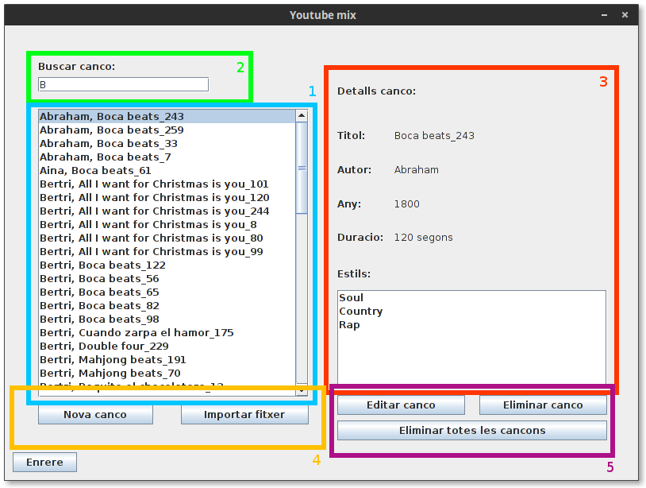

Gestió de cançons¶
Es pot accecir a l’apartat de gestió de cançons presionant en “Gestionar Cançons” de la finestra principal.
Descripció de la interficie¶
Llista de Cançons disponibles: En aquest apartat es poden consultar totes les cançons disponibles al programa, si la llista es molt gran, es pot usar el buscador (2) per filtrar les cançons i trobar la desitjada, al seleccionar una canço en aquesta llista, es podrà veure la seva informació en la finestra de consulta d’informació (3).
Buscador: Introdueixio part del nom d’una cançó o un autor per filtrar el resultat.
Consulta d’informació: En aquest apartat es mostra la informació de la cançó seleccionada.
Afegir cançons: El programa disposa de dues formes d’introduir cançons noves, individualment o a partir d’un fitxer de cançons.
- Introducció manual: Presionant el botó “Nova cançó”, s’accedirà a la introducció manual de cançons, La informació necesaria per a la introducció de la cançó es el nom de l’autor, el titol de la cançó, la duració en segons, l’any de publicació de la cançó i entre un i tres estils dels que la cançó formi part.
Nota
Tant el titol com el nom de l’autor de la cançó son informació bàsica per identificar la cançó, i com a tal no pot ser modificada mes endavant, comprovi que sigui correcte abans de desar la informació.
- Importar d’un fitxer: Es poden importar cançons a partir d’un fitxer, referirse a l’apartat “Format del fitxer de cançons” per una descripció del format que ha de tenir aquest fitxer.
Edició de les cançons: En aques apartat es mostren les eines necessaries per editar i eliminar cançons, existeixen dues formes d’eliminar cançons, individualment o de forma massiva. Presionar a “Eliminar totes les cançons” elimina totes les cançons presents al programa. També es dona la opció de modificar la informació d’una cançó. Si us plau, referirse a la nota de l’apartat de introducció manual per a informació sobre el nom i l’autor de la cançó.
Format del fitxer de cançons¶
Per tal de poder importar un fitxer de cançons, el fitxer ha de seguir un format concret:
Nom Artista;Titol Cançó;any;Estil 1;Estil 2;Estil 3;Duració en segons;
- Una cançó per linia, acabada en ”;”.
- Cada apartat ha d’anar separat amb ”;” i sense espais (o els espais seran interpretats com a part del camp).
- Si la cançó no te 3 estils, es pot substituir Estil 2 i Estil 3 per “-”.
- Si existeix algun error en el format d’una cançó (Falta Estil 1, l’any o la duració no son numeros...), la cançó no s’importarà.
Nota
Asseguri’s de que el fitxer de cançons no acaba en una linia en blanc, això provocarà que les cançons no s’importin correctament.